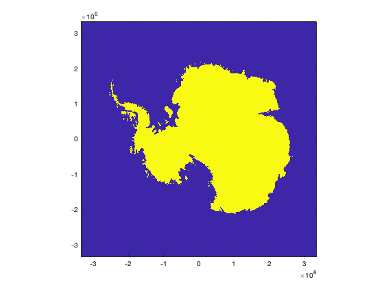
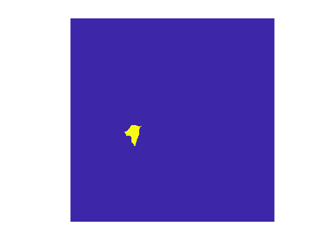

gridded_flux documentation
gridded_flux calculates the annual ice flux out of a gridded mask.
Contents
Syntax
flux = gridded_flux(mask,vx,vy,H,res) [flux,flux_err] = gridded_flux(mask,vx,vy,H,res,vx_err,vy_err,H_err)
Description
flux = gridded_flux(mask,vx,vy,H,res) calculates the ice flux in Gt/yr as it flows out of a binary mask that corresponds to velocity grids vx,vy (m/yr) and thickness H (m). The resolution of the grids res (m) must be specified as a scalar. Mass flux calculations assume the density of ice is 917 kg/m^3.
[flux,flux_err] = gridded_flux(mask,vx,vy,H,res,vx_err,vy_err,H_err) estimates flux error using the error grids vx_err, vy_err, and H_err. Error estimates assume all thickness errors are fully correlated (errors due to thickness sum) and all velocity errors are fully correlated (errors due to velocity errors sum), but velocity and thickness errors are independent (we take the root-sum-square of errors due to thickness and velocity).
Example 1: Antarctic grounding line flux.
%Start by loading data: [H,x,y] = bedmachine_data('thickness'); mask = bedmachine_data('mask'); % Get velocity data corresponding to the bedmachine grid: [X,Y] = meshgrid(x,y); vx = itslive_interp('vx',X,Y); vy = itslive_interp('vy',X,Y); % Fill ITS_LIVE gaps with Measures v2: isn = isnan(vx); vx(isn) = measures_interp('vx',X(isn),Y(isn)); vy(isn) = measures_interp('vy',X(isn),Y(isn));
Create a mask
To calculate grounding line flux, we'll define a mask as everywhere the BedMachine mask indicates land, grounded ice, or Lake Vostok, so anywhere the mask equals 1, 2 or 4. We also want to make sure we have valid velocity measurements along the boundary. Then we'll fill any remaining interior holes in the mask (although it really wouldn't matter either way) using imfill:
grounded = ismember(mask,[1 2 4]) & isfinite(vx); % Optional buffer inland by 6 pixels (3 km on this 500 m resolution grid): grounded = imerode(grounded,strel('disk',6)); grounded = imfill(grounded,'holes'); figure imagesc(x,y,grounded) axis xy image
Calculate grounding line flux
The mask above looks pretty good. Now we want to calculate the total mass of ice that goes into (positive value) or exits (negative value) the grounded mask. This grid is pretty big, so the calculation might take a few seconds:
res = diff(x(1:2)); % resolution of the grid in meters
GL_flux = gridded_flux(grounded,vx,vy,H,res)
GL_flux =
-1890.88
The value above looks about right. Gardner et al found 1920 Gt/yr for the year 2015. The mosaic we're using includes velocities from as far back as the 1980s, so our flux estimate is expected to be slightly lower, because our velocities are slighty lower than the 2015 values.
Example 2: Thwaites Glacier, with error
Now we build on example 1 by limiting the analysis to Thwaites Glacier and including error estimates. Start by loading the error estimates:
H_err = bedmachine_data('errbed'); vx_err = itslive_interp('vx_err',X,Y); vy_err = itslive_interp('vy_err',X,Y);
Now create a mask of the grounded portion (from Example 1) of Thwaites Glacier:
thwaites = grounded & inbasin(X,Y,'imbie refined','thwaites'); figure imagesc(x,y,thwaites) axis xy image off
Here's the estimated flux through the thwaites mask:
[thwaites_flux,thwaites_flux_err] = gridded_flux(thwaites,vx,vy,H,res,vx_err,vy_err,H_err)
thwaites_flux =
-126.64
thwaites_flux_err =
3.61
Citing AMT
If this function or any other part of Antarctic Mapping Tools is useful for you, please cite the paper that describes AMT.
Greene, C. A., Gwyther, D. E., & Blankenship, D. D. Antarctic Mapping Tools for Matlab. Computers & Geosciences. 104 (2017) pp.151-157. doi:10.1016/j.cageo.2016.08.003.
Author Info
This function was written by Chad A. Greene of NASA's Jet Propulsion Laboratory, December 2021.